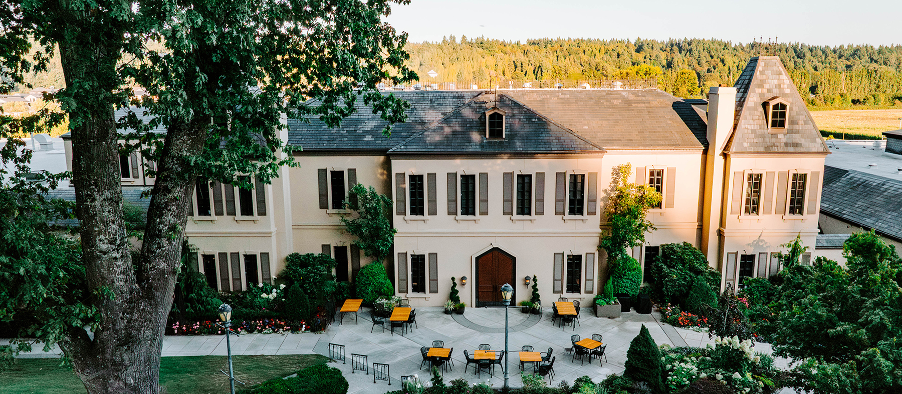

01
Chateau Ste. Michelle
Wine tasting and a stroll through the historic grounds.
~7 min from home · 11 a.m.–6 p.m. · tasting prices vary · ~1½–2½ hrs total incl. travel
Reservations recommended for tasting experiences.
Details ↗